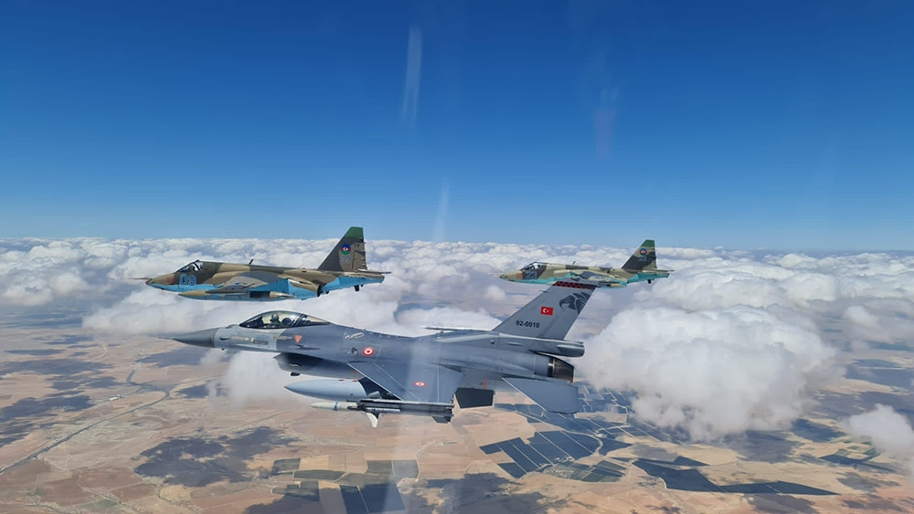

Fevral ayında iki bürc var: Dolça və Balıqlar. Fevralın 1-dən 18-nə qədər Dolça bürcü, 19-dan sonra isə Balıqlar bürcü başlayır. Dolça bürcü olan insanlar ağıllı və azad düşüncəli olurlar. Balıqlar bürcü olanlar isə həssas və mehriban olurlar.


14 Fevral tarixi Qədim Romada 14 fevral günü bütün romalılar üçün əhəmiyyətli bir gün idi. Bu gündə Roma xalqı tərəfindən qadınlıq və evlilik ilahəsi olaraq qəbul edilən ilaha hörmət əlamətimi olaraq tətil və şənlik edilərdi. 15 fevral günündə isə Luperkalia Bayramı başlayırdı. Bu bayram xalqın gənc əhalisi üçün böyük əhəmiyyət daşıyırdı. Bunun səbəbi isə həyatları qəti qaydalar ilə məhdudlaşdırılmış, bunun təbii nəticəsi olaraq birlikdə həyata şansı olmayan bu gənclər yalnız bu bayram müddətində belə olsa bir-birlərinin partneri olurdular. Hansı gənc qadının hansı gənc kişi ilə bir cüt meydana gətirəcəyi köhnə bir ənənə olan və Luperkalia Bayramının ərəfə günü edilən bir püşk ilə müəyyən olurdu. Romalı gənc qızlar adlarını kiçik kağız parçalarının üzərinə yazıb bir qaba qoyurdular. Gənc Romalı kişilər isə qabdan bu kağızları çəkərək üzərində hansı qızın adı yazılıbsa o qızla bayram əyləncələri boyunca birlikdə cinsi həyat yaşayırdılar. III əsrdə Roma imperiyasına başçılıq edən İmperator II Kladius tarix qaynaqlarında bu hallara son qoymaq istəyən əxlaqi dəyərlərə önəm verən bir imperator kimi xarakterizə olunub. Onun hətta ordunun güclənməsi və nizam-intizamın qorunması üçün orduda xidmət edən gənclərə müvəqqəti olaraq evlənməyi qadağan etdiyi də tarixi qaynaqlarda göstərilib. O zamanlar Valentin Romada rahib idi. Valentin imperatorun Luperkalia bayramını qadağan etməsinə baxmayaraq, gizli şəkildə qızlarla oğlanları görüşdürməkdə, onların bu müvəqqəti görüşünü də xristianlıq qaydaları ilə guya qanuniləşdirməkdə davam edirmiş. (Katoliklər də bu fakta dayanaraq iddia edirdilər ki, rahib Valentin xristianlığı təbliğ etdiyi üçün öldürülüb.) İmperator da onun bu hərəkətlərindən xəbər tutaraq zindana atdırır və döydürərək, təhqiramiz formada öldürtdürür. Valentin 14 fevral tairixində xristian məzarlığında dəfn edilir. Rahib Valentin barədə tarixdə keçən maraqlı faktlardan biri də onun həbsxanadan öz yoldaşlarına, xüsusən də keşiş dostu Mariusa "Valentini unutma", "Səni sevirəm" deyə məktublar göndərməsidir. Bu fakt ümumiyyətlə, Valentinin eyni zamanda bir homoseksual olduğu fərziyyəsini də önə çəkir. 14 Fevral Müqəddəs Valentin Günü müxtəlif xristian məzhəblərində qeyd olunur; məsələn, Anglikan Birliyi təqvimində, bayram günü kimi Lüteran kilsəsinin təqvimində göstərilir . Ancaq 1969-cu ildə 14 Fevral Müqəddəs Valentin günü Ümumi Roma Təqvimindən çıxarıldı səbəb kimi isə , Müqəddəs Valentin haqqında 14 fevralda Via Flaminiya üzərində dəfn olunmasından başqa heç nə məlum olmadığı göstərilir.A

Hərbi Hava Qüvvələri və Hava Hücumundan Müdafiə Qoşunlarımız bu gün hava məkanımızı tam gücündə qorumağa qadirdir
Bakı, 14 fevral, AZƏRTAC Bu gün Azərbaycan Hərbi Hava Qüvvələrinin yaranması günüdür. Azərbaycan Hərbi Hava Qüvvələri Silahlı Qüvvələrimizin xüsusi qoşun növüdür. Yaranma tarixi 1919-cu ildən götürülsə də, milli hərbi qurum kimi formalaşdırılması ötən əsrin 90-cı illərinə təsadüf edir. 1992-ci il fevralın 14-də Milli Ordunun Hərbi Hava Qüvvələri (HHQ) ayrıca bölmə kimi təsis olunub və həmin vaxtdan bu tarix Hərbi Hava Qüvvələri Günü kimi qeyd olunur. 1994-cü ildə atəşkəs müqaviləsi imzalandıqdan sonra Azərbaycanda başlanan hərbi islahatlar prosesinin özəyini məhz HHQ və Hava Hücumundan Müdafiə Qoşunları təşkil edib. 1997-ci ildə Azərbaycanın Ali Hərbi Təyyarəçilik Məktəbi ilk milli hərbi təyyarəçilərimizin buraxılışına başlayıb. Onu da qeyd edək ki, Azərbaycanın ilk hərbi pilotu Fərrux ağa Qayıbov olub. O, Birinci Dünya müharibəsində almanlara qarşı keçirilən hava əməliyyatlarında fəal iştirak edib və indiki Belarus ərazisində gedən döyüşlərdən birində həlak olub. AZƏRTAC xəbər verir ki, bu gün ən müasir təyyarə və helikopterlə arsenalını zənginləşdirən Hərbi Hava Qüvvələri və Hava Hücumundan Müdafiə Qoşunları Azərbaycan səmasını tam gücü ilə qorumağa qadirdir.

Son iyirmi ildə ölkəmizdə müdafiəyə ayrılmış vəsaitlərin əhəmiyyətli hissəsi məhz HHQ və HHMQ-nin dirçəldilməsinə sərf edilib və onun aviaparkı müasirləşdirilib. Azərbaycan və NATO arasında imzalanmış Fərdi Tərəfdaşlıq üzrə Əməliyyat Planı çərçivəsində H.Z.Tağıyev qəsəbəsindəki hərbi aerodrom modernləşdirilib. Eyni zamanda, hərbi aerodromlarda uçuşların təhlükəsizliyini təmin etmək məqsədilə xüsusi avadanlıqlar quraşdırılıb, texniki təminat binaları yenidən tikilib və təmir edilib.
Pilotlarımızın beynəlxalq təlimlərdə iştirakı onların uçuş və döyüş hazırlığını daim artırmaqdadır Azərbaycan müstəqillik qazandığı gündən hazırkı dövrədək HHQ daim inkişaf etməkdədir. HHQ-nin pilotlarının beynəlxalq təlimlərdə iştirakı onların uçuş və döyüş hazırlığını daim artırmaqdadır. Hazırda Azərbaycan HHQ-nin pilotları MDB məkanında ən çox uçuş keçirmiş pilotlar sayılır. Pilotlarımız, əsasən, Ali Hərbi Təyyarəçilik Məktəbində hazırlanır, Türkiyə və digər ölkələrin müvafiq ixtisasartırma kurslarında və təlimlərdə iştirak edirlər.
Azərbaycan Ali Təyyarəçilik Məktəbi 1998-ci ildən müasir standartlara uyğun tədris keçməklə gənc zabitləri hazırlamaqda davam etməkdədir. HHQ-də kifayət qədər peşəkar zabit kadrlarının olması kadr potensialının parlaq inkişafından xəbər verir. Gənc zabitlərin digər ölkələrdə təşkil olunmuş beynəlxalq təlim və kurslarda iştirakı, hərbi akademiyalarda təhsil almaları onların peşəkarlığının günüdən-günə artmasına şərait yaradır. Qardaş Türkiyə Respublikası ilə HHQ-nin təlimləri Azərbaycan hərbi pilotlarının NATO standartlarının öyrənilməsinə, onların döyüş hazırlıqlarının artırılmasına və ikitərəfli münasibətlərin daha da yaxınlaşmasına səbəb olub. Azərbaycan hərbi pilotları Avropa dövlətləri ilə hərbi təlimlərin keçirilməsinə hazırlıqlarını inkişaf etdirirlər. Mütəmadi olaraq Azərbaycanda “TurAz Qartalı” birgə taktiki-uçuş təlimləri keçirilir.
Azərbaycan Ali Təyyarəçilik Məktəbi 1998-ci ildən müasir standartlara uyğun tədris keçməklə gənc zabitləri hazırlamaqda davam etməkdədir. HHQ-də kifayət qədər peşəkar zabit kadrlarının olması kadr potensialının parlaq inkişafından xəbər verir. Gənc zabitlərin digər ölkələrdə təşkil olunmuş beynəlxalq təlim və kurslarda iştirakı, hərbi akademiyalarda təhsil almaları onların peşəkarlığının günüdən-günə artmasına şərait yaradır. Qardaş Türkiyə Respublikası ilə HHQ-nin təlimləri Azərbaycan hərbi pilotlarının NATO standartlarının öyrənilməsinə, onların döyüş hazırlıqlarının artırılmasına və ikitərəfli münasibətlərin daha da yaxınlaşmasına səbəb olub. Azərbaycan hərbi pilotları Avropa dövlətləri ilə hərbi təlimlərin keçirilməsinə hazırlıqlarını inkişaf etdirirlər. Mütəmadi olaraq Azərbaycanda “TurAz Qartalı” birgə taktiki-uçuş təlimləri keçirilir.

Bu gün Azərbaycanın xüsusi təyinatlı təhsil müəssisələrinin flaqmanı olan Heydər Əliyev adına Hərbi İnstitutda da müxtəlif ixtisaslar üzrə peşəkar zabitlər hazırlanır. Onlar hərbi xidmətin çətinliklərinin öhdəsindən layiqincə gələrək respublikamızın müstəqilliyi və ərazi bütövlüyünün qorunması uğrunda hər bir əmrə hazırdırlar. Hərbi Hava Qüvvələri, Hava Hücumundan Müdafiə Qoşunları, Hərbi Dəniz Qüvvələri fakültələrində aviasiyanın döyüş idarəetməsi, eləcə də dənizçi ixtisasları üzrə peşəkar zabitlər, təyyarəçilər, şturmanlar, mexaniklər, silahlanmanın müxtəlif sistemləri üzrə mütəxəssislər, aviasiya xidmətləri, radiotexniki vasitələr üzrə mühəndislər hazırlanır.
Hərbi şahinlərimiz paradlarımızda qüdrətlərini nümayiş etdiriblər Azərbaycan Silahlı Qüvvələrinin yaradılmasının 100 illik yubileyi münasibətilə 2018-ci il iyunun 26-da Bakının Azadlıq meydanında hərbi parad keçirilib. 240-dan çox hərbi texnika, gəmilər, 70-dən artıq uçuş vasitəsi, o cümlədən silahlanmaya yeni qəbul edilmiş ən müasir zirehli texnikalar, raket və artilleriya qurğuları, hava hücumundan müdafiə sistemləri, helikopterlər, pilotsuz uçuş aparatları kimi müxtəlif növ ən yeni silah və texnikaların nümayiş olunduğu həmin paradda Prezident, Ali Baş Komandan İlham Əliyev deyib: “Son illər ərzində ən müasir texnika və silahlar alınıbdır. Onların arasında yüzlərlə zirehli texnika, bir çox gözətçi gəmiləri, hərbi gəmilər, hava hücumundan müdafiə sistemləri, ən müasir standartlara cavab verən sistemlər, onlarla döyüş təyyarəsi, yüzdən çox döyüş, hərbi nəqliyyat, nəqliyyat helikopteri, ən müasir kəşfiyyat və döyüş pilotsuz uçuş aparatları, ən müasir artilleriya qurğuları, uzaqmənzilli raketlər, yaylım atəşli raket sistemləri, əməliyyat-taktiki raket kompleksləri - bütün bunlar bizim hərbi gücümüzü artırır. Deyə bilərəm ki, ordunun maddi-texniki təchizatı baxımından Azərbaycan dünya miqyasında nadir ölkələrdən biridir”.

2020-ci il dekabrın 10-da Bakının Azadlıq meydanında Vətən müharibəsində Qələbəyə həsr olunmuş Zəfər paradı keçirilib. Azərbaycan Prezidenti İlham Əliyev və Türkiyə Prezidenti Rəcəb Tayyib Ərdoğanın iştirak etdikləri paradda Hava Hücumundan Müdafiə silahları sistemləri kolonunun keçidi də olub. Kolona müdafiə nazirinin müavini - Hərbi Hava Qüvvələrinin komandanı, “Zəfər” ordenli general-leytenant Ramiz Tahirov başçılıq edib. Tribuna önündən modernləşdirilmiş “OSA-1T”, “S-125 TM”, “BUK-MB”, “İldırım” zenit-raket komplekslərinin, “S-300 Favorit” sistemlərinin keçidi olub. Ardınca İkinci Qarabağ müharibəsində Zəfərin əldə edilməsində çox mühüm rol oynayan “Orbiter-1KM” - “İti qovan”, “Orbiter-2B”, “Orbiter-3B”, “Orbiter-4”, “Aerostar-BP”, “Heron” pilotsuz uçuş aparatları (PUA), eləcə də ən müasir PUA-lar - “Bayraktar-TB2”, habelə “Hermes-450”, “Hermes-900”, “Quzğun” və “Harop” PUA-ları nümayiş olunub.
Eləcə də həmin paradda bundan başqa, Azadlıq meydanı üzərində Azərbaycan Hərbi Hava Qüvvələrinə məxsus döyüş təyyarələrinin və helikopterlərin uçuşu olub. “Qarabağ” ordenli polkovnik Həsən Əlövsətovun rəhbərlik etdiyi “Mİ-17” hərbi nəqliyyat-desant helikopterləri cütlüyü Azərbaycan və Türkiyənin dövlət bayraqları ilə Bakı buxtasının üzərindən uçaraq Zəfər paradının iştirakçılarını salamlayıb. Bunun ardınca Vətən Müharibəsi Qəhrəmanı polkovnik-leytenant Rəşad Nadirovun başçılığı ilə “Mİ-35” hücum helikopterləri qrupunun uçuşu olub. Polkovnik-leytenant Rəhim Quluzadənin başçılığı ilə “LAHAT” və “SPAYK” uzunmənzilli raketləri ilə silahlanmış “Mİ-17” helikopterlərinin və “Qarabağ” ordenli polkovnik Zaur Rüstəmovun rəhbərliyi ilə “MİQ-29” çoxməqsədli qırıcı təyyarələr qruplarının uçuşları da maraqla qarşılanıb. Zəfər paradında döyüş təyyarə və helikopterlərinin çıxışını müasir silahlarla təchiz olunmuş “Su-25” hücum və hava dəstək təyyarələr qrupu tamamlayıb. Vətən Müharibəsi Qəhrəmanı general-mayor Namiq İslamzadənin başçılıq etdiyi qrupun səmada Azərbaycanın dövlət bayrağının təsvirini yaratması üçrəngli şanlı bayrağımızın daim yüksəklərdə dalğalanacağını təcəssüm etdirib.

Azərbaycan Hərbi Hava Qüvvələrinin “SU-25” və “MiQ-29” qırıcı təyyarələri və hərbi helikopterləri ötən ilin mayda “TEKNOFEST Azərbaycan”nda pilotaj uçuşlarını həyata keçirib, hava şousu nümayiş etdiriblər.

Vətən müharibəsində Qələbənin qazanılmasında hava şahinlərimizin böyük rolu olub Vətən müharibəsində Zəfərin başlanğıcı olan Aprel döyüşlərində Hərbi Hava Qüvvələri düşmənə uğurlu zərbələr endirib. Döyüşdə Mi-24 helikopterin üç pilotu - Təbriz Musazadə, Əbu Bəkir İsmayılov və Urfan Vəlizadə qəhrəmancasına şəhid olublar.

Hava şahinlərimizin, pilotlarımızın İkinci Qarabağ müharibəsində Qələbənin qazanılmasında böyük rolu olub. HHQ-nin hərbi qulluqçuları qəhrəmanlıq və şücaət nümunələri göstəriblər. Vətən müharibəsində HHQ tərəfindən düşmənin hava hücumundan müdafiə sistemini məhv etmək məqsədilə “Qarabağ mücrüsü” adlı xüsusi əməliyyat planı hazırlanıb. Bu, hərbçilərimizin düşmənin fikrini yayındırmaq üçün müxtəlif variantları idi. Düşmənin bütün növ zenit-raket komplekslərini işə salmağa vadar etmək üçün mövcud aviasiya vasitələri havaya qaldırıb kütləvi aviasiya zərbəsi imitasiya edildi. Həmin imitasiya vasitələri düşmənin zenit-raket komplekslərinin məhvetmə zonasına daxil olmadan müxtəlif manevrlər ediblər. İkinci tədbir kimi, düşmənin fəndi başa düşməməsi üçün Dövlət Sərhəd Xidmətinə məxsus, göyərtəsində pilot olmayan, “kukruznik” kimi tanınan AN-2 təyyarələri düşmənin zenit-raket komplekslərinin məhvetmə zonasına yönləndirilib. Plan uğurla icra olunub və Vətən müharibəsinin ilk günlərində Hərbi Hava Qüvvələri və Hava Hücumundan Müdafiə Qoşunlarının birgə fəaliyyəti nəticəsində düşmənin hava hücumundan müdafiə sistemlərinin 70 faizi sıradan çıxarılıb. “Bayraktar”, “Harop”, “Sky Striker” zərbə dronları düşmən hədəflərini anında məhv edib. İkinci Qarabağ müharibəsində bir neçə pilotumuz Vətən Müharibəsi Qəhrəmanı medalı ilə təltif olunub. Bundan başqa, onlardan iki nəfəri eyni mükafata ölümündən sonra layiq görülüb. Həmin müharibədə Dövlət Sərhəd Xidmətinin pilotlarından iki nəfər ilk günlərdə şəhidlik zirvəsinə ucalıblar. Azərbaycan Prezidenti, Silahlı Qüvvələrin Ali Baş Komandanı İlham Əliyevin rəhbərliyi altında ölkəmizdə ordu quruculuğu sahəsində islahatlar həyata keçirilib, yüksək pilotaja malik pilotlar yetişdirilib. Bu gün dövlətimizin başçısının diqqət və qayğısı sayəsində şəxsi heyətin döyüş və mənəvi-psixoloji hazırlığı yüksəldilir, aviabazaların maddi-texniki təminatı gücləndirilir, uçuş və texniki heyətin sosial-məişət şəraitinin daha da yaxşılaşdırılması istiqamətində mühüm işlər görülür.
HHQ-nin şəxsi heyəti Vətən müharibəsində olduğu kimi, bundan sonra da Ali Baş Komandanın istənilən döyüş əmrini hər an yerinə yetirməyə hazırdır. Xalqımız əmin ola bilər ki, bu gün silah sistemləri və hərbi texnikalarımızla Azərbaycanın hava məkanı düşmənin istifadəsindəki istənilən texnika və silah növlərindən, hava və yerüstü zərərvurma vasitələrindən etibarlı şəkildə qorunub və bundan sonra da qorunacaq. Hərbi Hava Qüvvələri Günü münasibətilə bu sahədə təmsil olunan bütün hərbçilərimizi təbrik edir, onlara aydın fəza arzulayırıq.